イベント情報
（終了しました）【射水市太閤山】完成現場見学会
詳しいご案内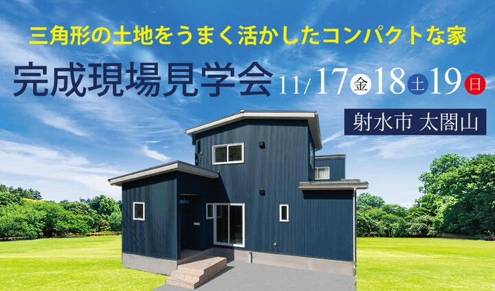
日程・価格・募集内容などは、掲載当時の情報です。
ご両親と同居するために建てられた住宅
老後も安心なコンパクトで暖かい家
将来を見据えてライフプランシミュレーションを行い、
現在別居中のご両親と、同居しながら老後の生活も豊かに暮らせるプランを選択。
活用が難しく、あまり人気の高くない「三角形」の土地を相場よりも安く購入し、
その分、建物に費用をかけて快適な居住空間を実現しました。
限定３日間の見学会で、見て、触れて、その違いをぜひ体感してください。

○ 間取り
LDKを中心とした、廊下の無いバリアフリーで機能的な間取りは、冷暖房効率の良い「夏涼しく」「冬暖かい」家も同時に実現しました。
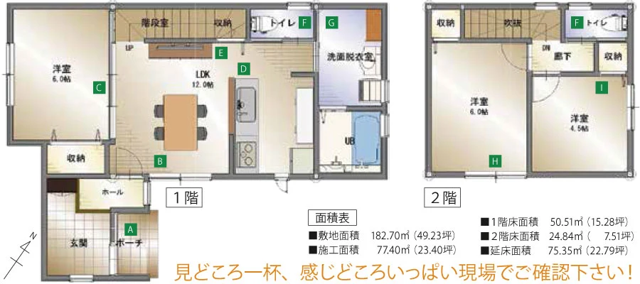
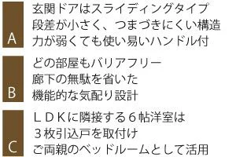
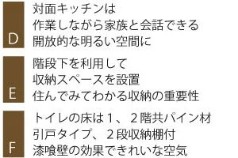
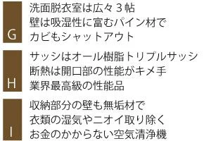
○ 太陽と暮らす省エネ・エコ住宅
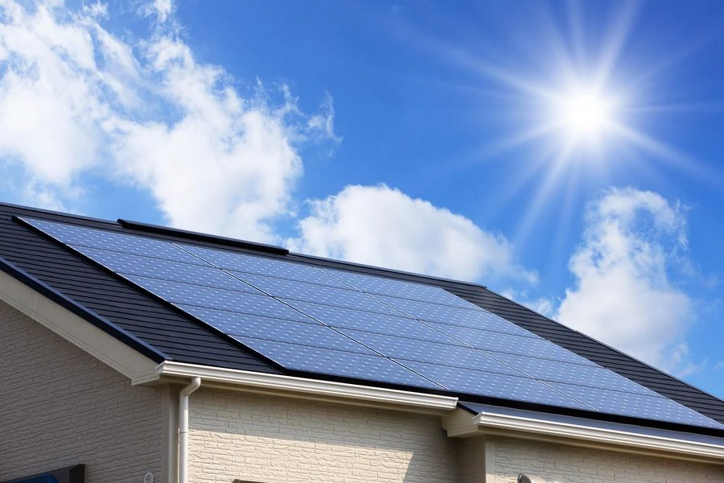
光熱費のかからない省エネのエコライフを実現しています。
（画像はイメージです）
○ 玄関
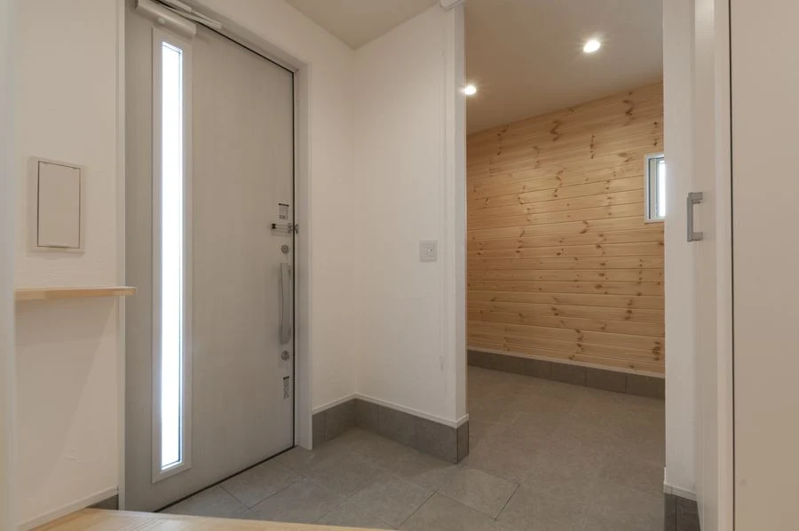
広い玄関スペース。収納も十分に考えた設えです。
（画像はイメージです）
○ 快適なリビング
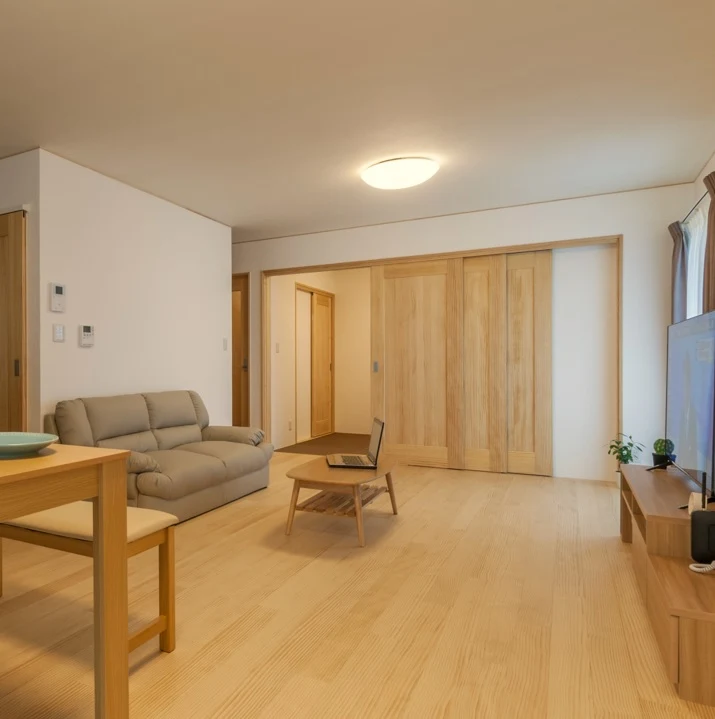
床材は天然無垢材を使用。床暖房無しでも快適で、常に素足で歩きたくなる肌触りです。
（画像はイメージです）
○ キッチン
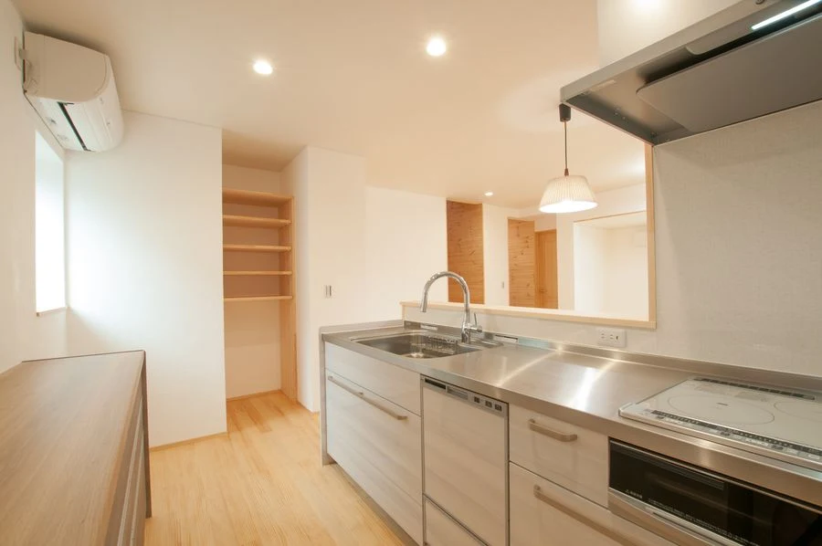
必要十分なサイズのキッチンスペースと、綺麗に収まる収納スペースを備え、日々の料理が楽しくなる空間に仕上がりました。
（画像はイメージです）
○ 対面キッチン
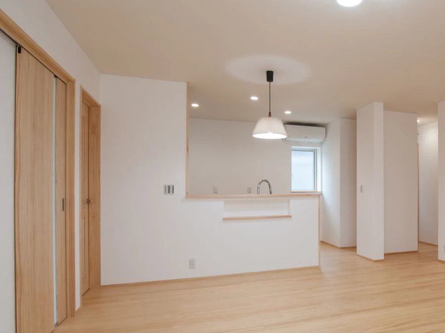
対面キッチンで、リビングの様子がよくわかります。
（画像はイメージです）
○ ３枚引き込み戸
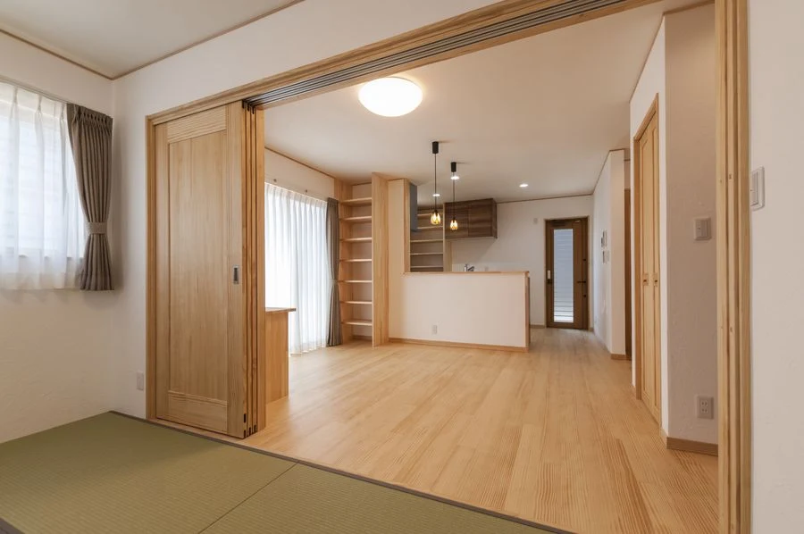
リビングと隣室の仕切り戸は「３枚引き込み戸」を採用して、一体感のある空間を実現しました。
（画像はイメージです）
○ 洗面脱衣室
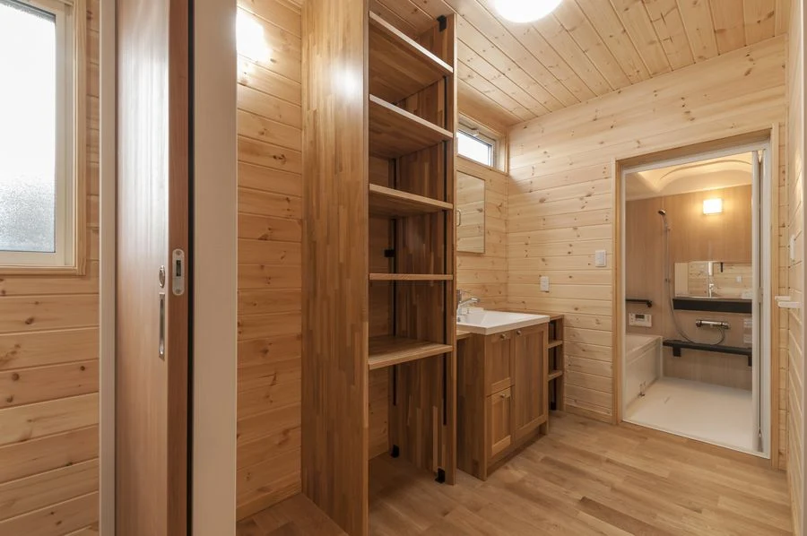
壁と天井は、吸湿性に優れたパイン材を使用しています。
（画像はイメージです）
○ トイレ
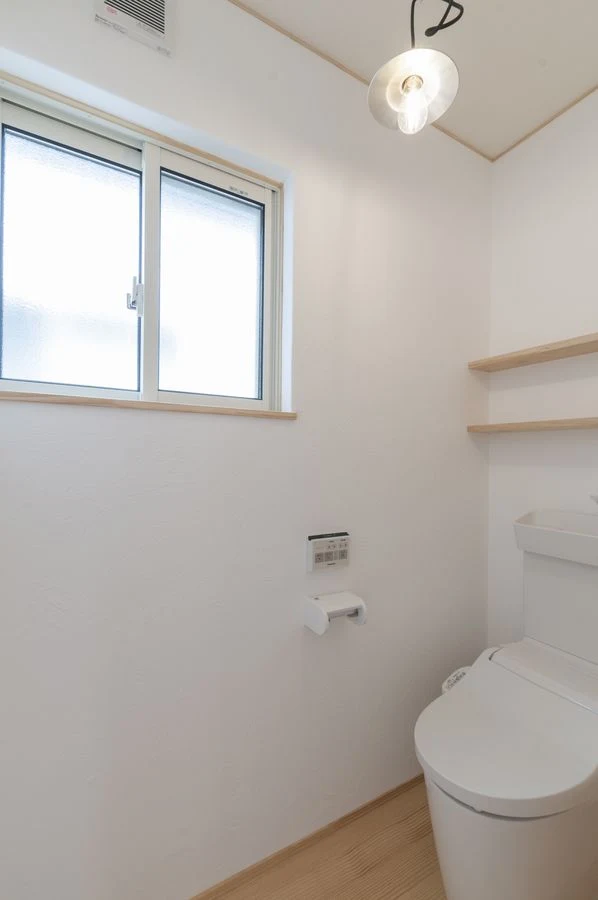
トイレの壁にも、呼吸する壁「漆喰」を採用し、空気を綺麗に保ちます。
（画像はイメージです）
「天然素材の家」４つの特徴
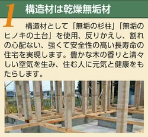
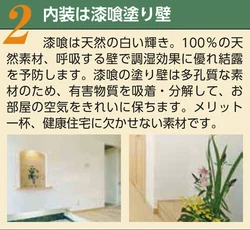
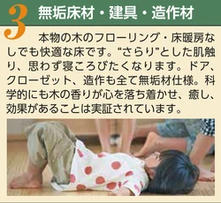
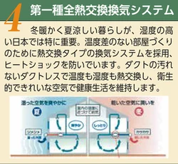
◯「天然素材の家」が「幸せな住宅」の理由
住む人が「幸せ」であるためには、「健康」であることが大前提。
多くの家が、"新建材" と呼ばれる化学物質を含有した建材を使って建てられていますが、眼の刺激、のどの刺激、頭痛、疲労感など、多様な症状を訴える「シックハウス症候群」は、この化学物質が原因とされるデータが数多く報告されています。
安心して健康的な生活をしていただくために、不健康素材を含まない「天然素材」にこだわった家づくりをしています。

◯ご来場特典
①ベストセラー書籍「医師が勧める本物の健康住宅」を差し上げます。
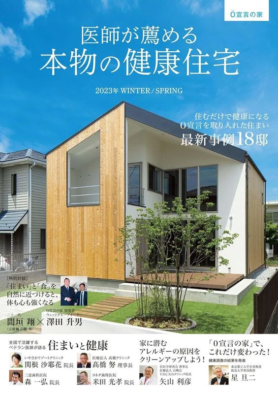
②家づくりで一番大切な「資金計画」小冊子を差し上げます。
開催概要
- 開催日時
- 2023年11月17日（金）18日（土）19日（日）
- 住所
- 富山県射水市太閤山 ※詳しい場所はご予約の方にお伝えします
- 電話
- 0800-200-2661(フリーダイヤル)
ご予約フォームから「ご希望の日時」をお聞かせください。